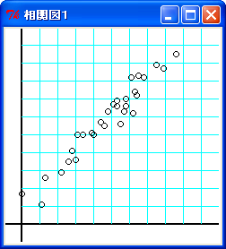
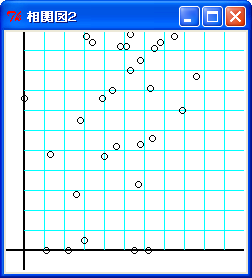
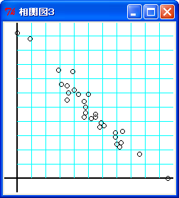
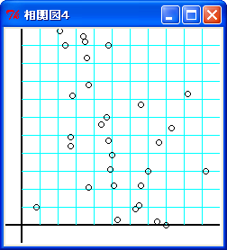
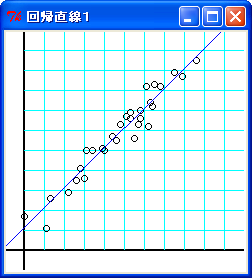
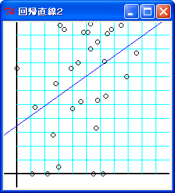
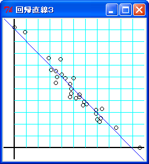
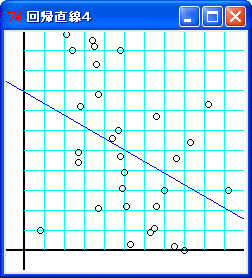
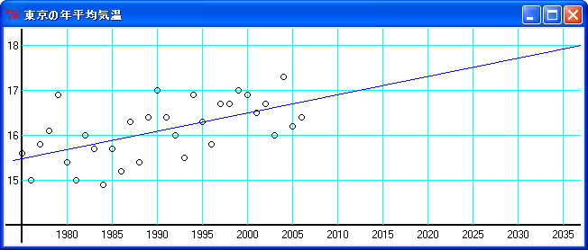
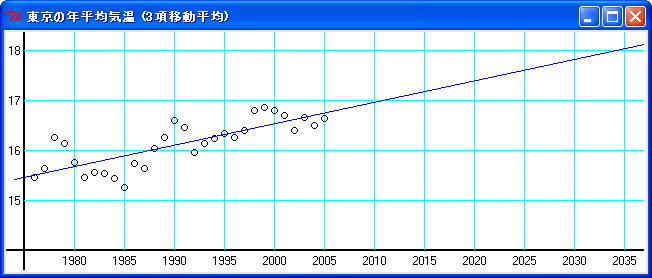

今回は「相関 (correlation) 」と「回帰 (regression) 」について説明します。簡単にいうと、2 つの確率変数の間にある関連性のことを「相関」といい、一方が増加するにつれて他方も増加するまたは減少する傾向が見られるとき、相関関係 (または単に相関) があるといいます。
2 つの確率変数の間に相関が認められるとき、その関係を曲線や曲面で代表することを「回帰」といいます。とくに、相関が線形傾向の場合、その関係を一本の直線で示すことができます。これを「直線回帰」とか「線形回帰」といい、その直線を「回帰直線」といいます。回帰はデータの推計などで用いられる重要な手法の一つです。
一方が増加するときに他方も増加傾向が見られる場合を「正の相関」があるといい、他方に減少傾向が見られる場合を「負の相関」があるといいます。また、相関関係が明瞭な場合を「強い相関」といい、不明瞭な場合を「弱い相関」といいます。文章で説明してもわかりにくいのて、図に示すことにしましょう。
たとえば、次のリストに示す対のデータ (x, y) が 30 個あります。
リスト : 対のデータ (1)
# 強い正の相関
data1 = [
(4.6, 5.5), (0.0, 1.7), (6.4, 7.2), (6.5, 8.3),
(4.4, 5.7), (1.1, 1.1), (2.8, 4.1), (5.1, 6.7),
(3.4, 5.0), (5.8, 6.6), (5.7, 6.3), (5.5, 5.6),
(7.9, 8.7), (3.0, 3.6), (6.8, 8.2), (6.2, 6.2),
(4.0, 5.0), (8.6, 9.5), (7.5, 8.9), (1.3, 2.6),
(6.3, 7.4), (3.1, 5.0), (6.1, 8.2), (5.3, 6.6),
(3.9, 5.1), (5.8, 7.0), (2.6, 3.5), (4.8, 6.3),
(2.2, 2.9), (5.3, 6.9)
]
これを平面上にプロットしたものを「相関図 (correlation diagram) 」とか「散布図」といいます。下図を見てください。
 強い正の相関
横軸を x, 縦軸を y とすると、x が増加すると y も増加していることが一目でわかります。これが正の相関です。そして、点がある直線上に並んでいることもわかるでしょう。強い相関性を示しています。
ご参考までに、弱い相関と負の相関を示すデータと相関図を次に示します。
リスト : 対のデータ (2)
# 弱い正の相関
data2 = [
(4.6, 5.2), (0.0, 7.6), (6.4, 5.6), (6.5, 10.1),
(4.4, 8.0), (1.1, 0.0), (2.8, 6.5), (5.1, 10.2),
(3.4, 10.4), (5.8, 5.3), (5.7, 3.3), (5.5, 0.0),
(7.9, 7.0), (3.0, 0.5), (6.8, 10.4), (6.2, 0.0),
(4.0, 4.7), (8.6, 8.7), (7.5, 10.7), (1.3, 4.8),
(6.3, 8.1), (3.1, 10.7), (6.1, 17.9), (5.3, 9.0),
(3.9, 7.6), (5.8, 9.5), (2.6, 2.8), (4.8, 10.2),
(2.2, 0.0), (5.3, 10.8)
]
 弱い正の相関
リスト : 対のデータ (3)
# 強い負の相関
data3 = [
(6.1, 3.7), (3.9, 7.5), (8.6, 1.7), (5.9, 3.9),
(3.5, 5.5), (7.0, 2.4), (0.9, 9.8), (0.0, 10.2),
(5.2, 4.2), (3.5, 6.5), (6.9, 3.2), (4.3, 5.9),
(5.0, 5.9), (7.4, 3.3), (3.1, 6.6), (4.0, 6.2),
(6.9, 2.9), (4.8, 5.0), (10.6, 0.0), (4.7, 4.3),
(2.9, 7.6), (7.2, 2.2), (3.6, 6.0), (5.5, 4.3),
(5.5, 4.5), (6.9, 3.2), (5.8, 3.6), (4.8, 4.6),
(7.3, 2.5), (4.7, 5.4)
]
 強い負の相関
リスト : 対のデータ (4)
# 弱い負の相関
data4 = [
(3.5, 10.2), (8.0, 0.0), (10.2, 3.0), (2.1, 10.8),
(2.8, 7.2), (3.7, 2.1), (5.1, 2.2), (7.5, 0.2),
(7.6, 4.6), (5.3, 0.3), (4.7, 6.0), (8.3, 5.4),
(4.8, 4.7), (6.6, 2.2), (2.4, 10.0), (4.4, 5.6),
(3.6, 9.3), (7.0, 3.0), (4.9, 3.1), (2.7, 4.4),
(9.2, 7.3), (3.7, 7.8), (0.8, 1.0), (4.8, 10.0),
(6.5, 1.1), (6.3, 0.9), (2.7, 4.9), (5.0, 3.9),
(3.4, 10.5), (6.6, 6.7),
]
 弱い負の相関
統計学では、相関の強弱を表す統計量として「相関係数 (correlation coefficient) 」を用います。相関係数の定義を次に示します。
相関係数 : ρxy = σxy / σxσy
N
σx2 = (1/N) * Σ (xi - xm)2 : x の分散
i=1
N
σy2 = (1/N) * Σ (yi - ym)2 : y の分散
i=1
N
σxy = (1/N) * Σ (xi - xm)(yi - ym) : x, y の共分散
i=1
N
xm = (1/N) * Σ xi : x の平均
i=1
N
ym = (1/N) * Σ yi : y の平均
i=1
まとめると
N N N
ρxy = Σ(xi - xm)(yi - ym) / √(Σ(xi - xm)2 * Σ(yi - ym)2)
i=1 i=1 i=1
σxy を「共分散 (covariance) 」といいます。ちなみに、共分散も x と y の相関性を表しています。次の図を見てください。
yi - ym
│
第2象限 │第1象限
│
────┼──── xi - xm
│
第3象限 │第4象限
│
相関図の新しい座標
相関図で点 (xm , ym) が原点になるように座標を平行移動します。(x - xm) * (y - ym) > 0 を満たすデータ (x, y) は、第 1 象限もしくは第 3 象限にあります。したがって、第 1 象限もしくは第 3 象限にあるデータが多いほど、σxy は大きな正の値になり、正の相関を示すことになります。
逆に、第 2 象限と第 4 象限に多くのデータがあると、x - xm と y - ym の符号が逆になるので σxy は負の値になり、負の相関を示します。また、データが全ての象限に均等に散らばっているとすると、σxy は 0 に近い値になるはずです。この場合、相関性はほとんどありません。
ここで「シュワルツの不等式」を用いると、次の関係式が成り立ちます。
シュワルツの不等式 (a12 + a22 + ... + an2)(b12 + b22 + ... + bn2) >= (a1b1 + a2b2 + ... + anbn)2 n n n Σai2 * Σ bi2 >= (Σ aibi)2 i=1 i=1 i=1 ここで ai = xi - xm, bi = yi - ym とおくと n n n Σ(xi - xm)2 * Σ (yi - ym)2 >= (Σ (xi - xm)(yi - ym))2 i=1 i=1 i=1 n n n Σ (xi - xm)(yi - ym) / √(Σ (xi - xm)2 * Σ (yi - ym)2) <= 1 i=1 i=1 i=1 よって -1 <= ρxy <= 1 が成り立つ
相関係数 ρxy は 1 に近づくほど強い正の相関を表し、-1 に近づくほど強い負の相関を表します。正の相関も負の相関も見られないとき、x と y に相関はありません。この場合、相関係数は 0 になります。つまり、0 に近づくほど相関性はなくなるわけです。
相関係数を求めるプログラムは簡単です。次のリストを見てください。
リスト : 相関係数を求める
def corrcoef1(data):
n = len(data)
xm = 0.0
ym = 0.0
for x, y in data:
xm += x
ym += y
xm /= n
ym /= n
sx2 = 0.0
sy2 = 0.0
sxy = 0.0
for x, y in data:
sx2 += (x - xm) ** 2
sy2 += (y - ym) ** 2
sxy += (x - xm) * (y - ym)
return sxy / math.sqrt(sx2 * sy2)
最初に data を通読して x, y の平均値 xm, ym を求めます。次に、再度 data を通読して x の分散 sx2, y の分散 sy2, 共分散 sxy を求めて、最後に相関係数を計算して返します。実行結果は次のようになります。
: 相関係数
-----------------
data1 : 0.968
data2 : 0.352
data3 : -0.969
data4 : -0.384
相関係数からも data1 と data3 は強い相関で、data2 と data4 は弱い相関であることが分かります。一般に、相関係数の解釈は次のようになります。
| 絶対値 | 解釈 |
|---|---|
| 0.7 ～ 1.0 | 強い相関がある |
| 0.4 ～ 0.7 | 中程度の相関がある |
| 0.2 ～ 0.4 | 弱い相関がある |
| 0.0 ～ 0.2 | ほとんど相関がない |
ここで、相関係数は 2 つの確率変数の間にある線形的な相関関係を表していることに注意してください。相関図で線形的な相関関係がある場合、データの近くを通る直線 (回帰直線) を引くことができます。回帰直線はあとで詳しく説明します。
なお 参考文献 [2] によると、データを 1 回通読するだけで相関係数を求めることができるそうです。参考文献 [2] のプログラムを Python で書き直すと、次のようになります。
リスト : 相関係数を求める (2)
def corrcoef2(data):
xm = 0.0
ym = 0.0
sx2 = 0.0
sy2 = 0.0
sxy = 0.0
i = 0
for x, y in data:
i += 1
x -= xm
xm += x / i
sx2 += (i - 1) * x * x / i
y -= ym
ym += y / i
sy2 += (i - 1) * y * y / i
sxy += (i - 1) * x * y / i
return sxy / math.sqrt(sx2 * sy2)
計算結果は関数 corrcoef1 と同じになります。
今まで説明した相関係数は「ピアソン (Pearson) の積率相関係数」と呼ばれていて、データが適切な方法で数値化されている場合は、この相関係数を用いることができます。ところが、データが数値化されていない、もしくはデータの数値化が困難な場合もあるでしょう。このような場合でもデータの順位 (ランク) がわかれば相関係数を求めることができます。この方法を「スピアマン (Spearman) の順位相関係数」といいます。
n 個の確率変数 Xi Yi の値が 1 から n までの順位を表している場合、順位相関係数は次の式で求めることができます。
n
ρ = 1 - 6 * Σ (xi - yi)2 / (n3 - n)
i=1
対のデータ xi yi の差分を di とすると、X と Y が完全に一致するならば、Σdi2 は 0 になるので順位相関係数 ρ は 1 になります。X と Y が逆順で完全に一致する場合、Σdi2 の値は次のようになります。
n n n
Σ di2 = Σ (n + 1 - 2i)2 = Σ ((n+1)2 - 4(n+1)i + 4i2)
i=1 i=1 i=1
= n(n+1)2 - 4(n+1)n(n+1)/2 + 4n(n+1)(2n+1)/6
= (n3 - n) / 3
順位相関係数 ρ は 1 - 2 = -1 になります。したがって、順位相関係数の値は相関係数と同様に -1 <= ρ <= 1 の範囲になり、1 に近づくほど正の相関が強くなり、-1 に近づくほど負の相関が強くなります。また、値が 0 に近づくほど相関がなくなるのも相関係数と同じです。
なお、順位相関係数の式は「ピアソンの積率相関係数」の特殊な場合として導き出すことができます。順位を用いて相関係数を求める場合、式はここまで簡単になるわけです。興味のある方は 参考文献 1 をお読みください。
簡単な例題として、対のデータ data1, data2, data3, data4 をランクに変換してみましょう。次のリストを見てください。
リスト : 順位で表されたデータ
# 強い正の相関
rank1 = [
(1, 2), (2, 1), (3, 3), (4, 4),
(5, 5), (6, 7), (7, 6), (8, 8),
(9, 9), (10, 11), (11, 10), (12, 13),
(13, 18), (14, 12), (15, 23), (16, 14),
(17, 19), (18, 16), (19, 20), (20, 15),
(21, 17), (22, 21), (23, 25), (24, 24),
(25, 22), (26, 27), (27, 26), (28, 29),
(29, 28), (30, 30)
]
# 弱い正の相関
rank2 = [
(1, 2), (2, 4), (3, 18), (4, 23),
(5, 7), (6, 5), (7, 19), (8, 11),
(9, 3), (10, 13), (11, 20), (12, 25),
(13, 6), (14, 29), (15, 1), (16, 10),
(17, 12), (18, 24), (19, 30), (20, 16),
(21, 21), (22, 26), (23, 14), (24, 15),
(25, 9), (26, 27), (27, 8), (28, 28),
(29, 17), (30, 22)
]
# 強い負の相関
rank3 = [
(1, 30), (2, 29), (3, 26), (4, 25),
(5, 27), (6, 23), (7, 22), (8, 24),
(9, 28), (10, 19), (11, 21), (12, 20),
(13, 16), (14, 11), (15, 17), (16, 18),
(17, 14), (18, 13), (19, 12), (20, 5),
(21, 10), (22, 15), (23, 7), (24, 9),
(25, 6), (26, 4), (27, 8), (28, 3),
(29, 2), (30, 1)
]
# 弱い負の相関
rank4 = [
(1, 27), (2, 25), (3, 19), (4, 20),
(5, 1), (6, 21), (7, 10), (8, 18),
(9, 22), (10, 24), (11, 30), (12, 16),
(13, 17), (14, 4), (15, 26), (16, 14),
(17, 5), (18, 28), (19, 12), (20, 13),
(21, 23), (22, 6), (23, 29), (24, 11),
(25, 9), (26, 3), (27, 15), (28, 8),
(29, 7), (30, 2)
]
x, y ともに、小さな値から順番に 1 から 30 までの番号 (ランク) を付けます。このデータから順位相関係数を求めるプログラムは次のようになります
リスト : 順位相関係数を求める
def rank_corrcoef(data):
n = len(data)
d = 0
for x, y in data:
d += (x - y) ** 2
return 1.0 - 6.0 * d / (n ** 3 - n)
関数 rank_corrcoef は、順位相関係数の定義をそのままプログラムしただけなので説明は不要でしょう。rank1, rank2, rank3, rank4 の順位相関係数を求めると次のようになります。
: 相関係数
-----------------
rank1 : 0.962
rank2 : 0.388
rank3 : -0.955
rank4 : -0.436
rank1 は強い正の相関で、rank3 は強い負の相関になりました。これは data1, data3 と同じですね。rank2, rank4 の場合、data2, data4 よりも相関係数の値は少し大きくなりましたが、同じ傾向を示しています。このように、順位だけでも判明すれば相関係数を求めることができます。
なお、rank1, rank2, rank3, rank4 の相関係数は、関数 corrcoef1 を使っても求めることができます。当然ですが、相関係数は同じ値になります。
母集団から大きさ n の標本を無作為抽出します。この標本から相関係数を求めたとき、相関性が明瞭な場合は問題ないのですが、相関係数が小さな値で相関性が不明瞭な場合もあります。このようなとき、母集団に相関性があるのか検定した方がよいでしょう。これを「無相関検定」といいます。
帰無仮説として「母相関係数 ρ = 0 」を立てます。そして、次に示す統計量を計算します。
T = ρ * √(n - 2) / √(1 - ρ2)
統計量 T は自由度 n - 2 の t 分布に従います。両側検定で自由度 n - 2 危険率 5 % の値を tα とすると、そのときの相関係数の限界値は次の式で計算することができます。
限界値 = tα / √(n - 2 + tα2)
限界値の計算結果を次の表に示します。
| n | 限界値 | n | 限界値 |
|---|---|---|---|
| 5 | ±0.878 | 20 | ±0.444 |
| 10 | ±0.632 | 25 | ±0.396 |
| 15 | ±0.514 | 30 | ±0.361 |
標本の大きさ n が小さい場合、相関係数が大きな値でないと帰無仮説を棄却することはできません。n が大きくなるにしたがって、相関係数の限界値は減少していきます。n が 30 の場合、(-∞, -0.361), (0.361, ∞) が棄却域になります。また、n が 100 以上になると、相関係数の分布は正規分布 N(0, 1/√n) で近似することができます。この場合、危険率 5 % の限界値は 1.96 / √n で求めることができます。
たとえば、data3 の相関係数は 0.352 なので、棄却域には入っていません。したがって、帰無仮説を容認して data3 に相関性があるとはいえない、という結論になります。他のデータは棄却域に入っているので、帰無仮説を棄却して「X と Y には相関が認められる」という結論になります。
それでは簡単な例題として、擬似乱数の検定に挑戦してみましょう。擬似乱数に求められる性質として、「等確率性 (一様性) 」と「独立性 (無規則性) 」の二つがあります。前回は例題として、簡単な等確率性の検定を行うプログラムを作りました。今回は独立性の検定を行うプログラムを作ります。
たとえば、サイコロには規則性がないので、目の出る順番はまったくでたらめになります。いま 2 が出たから次は 1 が出るとか、3, 4 と続いたから次は 5 が出るなどのような規則性はありません。ようするに、以前に出現した数によって次に出現する数が決まるようなことはないのです。これが独立性で、出現した各数には相関性がないことから、無相関性と呼ばれることもあります。
ただし、コンピュータで生成する擬似乱数の場合、独立性を完全に実現することはできない、ということに注意してください。擬似乱数は「決められた手順 (アルゴリズム) 」に従って乱数を生成しています。手順をどんなに複雑なものにしたとしても、あらかじめ決められた手順を実行するだけなので、規則性をゼロにすることは原理的に不可能なことなのです。
等確率性の検定には、平均値の検定やカイ 2 乗検定を用いることができます。独立性を検定する簡単な方法は、隣同士の乱数の相関係数を求めて無相関検定を行うことです。
プログラムは簡単です。次のリストを見てください。
リスト : 擬似乱数の簡単な検定
import rand, math
# 独立性のテスト
def test(gen, n):
xm = 0.0
ym = 0.0
sx2 = 0.0
sy2 = 0.0
sxy = 0.0
i = 0
x = gen.random()
for _ in xrange(n):
y = gen.random()
i += 1
x -= xm
xm += x / i
sx2 += (i - 1) * x * x / i
y -= ym
ym += y / i
sy2 += (i - 1) * y * y / i
sxy += (i - 1) * x * y / i
x = y
return sxy / math.sqrt(sx2 * sy2)
# テスト
prg = rand.Random(1)
n = 10000
b = 1.96 / math.sqrt(n)
for _ in xrange(20):
a = test(prg, n)
print a, b, abs(a) < b
モジュール rand は拙作のページ 擬似乱数 で作成したもので、線形合同法で乱数を生成します。プログラムは隣同士の乱数を対のデータ (x, y) にして n 個生成し、その相関係数を求めています。そして、その値の絶対値が 1.96 / √n よりも小さければ、相関性はないと判定します。
今回は危険率 5 % で判定しているので、テストを 20 回行えば 1 回くらいは棄却されることになります。テスト回数をもっと増やすと、棄却される割合は 5 % に近い値になります。そうでなければ、擬似乱数として何か問題があると考えられます。テスト結果は、True が 18 回で False が 2 回になりました。
このテストは簡単なので、ほとんどの乱数生成アルゴリズムはこれをクリアすると思います。擬似乱数の検定はけっこう難しくて、この検定をクリアしたからといって独立性が保障されるわけではありません。複数の検定を試してみる必要があるでしょう。擬似乱数の検定にはいろいろな方法が考案されています。興味のある方は 参考文献 2 をお読みください。
2 つの確率変数の間に相関が認められるとき、その関係を曲線や曲面で代表することを「回帰 (regression) 」といいます。相関に線形傾向が見られる場合、その関係を一本の直線で表すことができます。これを「直線回帰」とか「線形回帰」といい、その直線を「回帰直線」といいます。
回帰直線は次に示す式で求めることができます。
回帰直線の方程式を y = ax + b とすると
n n
a = Σ (xi - xm)(yi - ym) / Σ (xi - xm)2
i=1 i=1
b = ym - axm
参考文献 1 によると、この式は「最小 2 乗法」で求めることができるそうです。
方程式 y = ax + b の係数 a, b を求めるプログラムは簡単です。次のリストを見てください。
リスト : 回帰直線 y = ax + b を求める
def regress1(data):
n = len(data)
xm = 0.0
ym = 0.0
for x, y in data:
xm += x
ym += y
xm /= n
ym /= n
sx2 = 0.0
sxy = 0.0
for x, y in data:
sx2 += (x - xm) ** 2
sxy += (x - xm) * (y - ym)
a = sxy / sx2
return a, ym - a * xm
プログラムは相関係数を求める関数 corrcoef1 とほとんど同じです。最初に data を通読して x, y の平均値 xm, ym を求めます。次に、再度 data を通読して x の分散 sx2, 共分散 sxy を求めて、最後に係数 a, b を計算して返します。
ご参考までに、data1, data2, data3, data4 の回帰直線を下図に示します。
 y = 0.998 x + 1.124
 y = 0.717 x + 3.458
 y = -1.011 x + 10.028
 y = -0.577 x + 7.912
相関の強さは回帰直線のまわりにデータが密集している度合いによって表されます。回帰直線の傾き方と相関の強弱に関係はありません。回帰直線のまわりにデータが密集しているほど線形関係が強くなり、離れるほど線形関係が弱くなります。相関係数でいうと、±1 に近づくほどデータは回帰直線のまわりに密集し、ちょうど ±1 になると全てのデータが回帰直線上に並びます。
なお、相関係数を求めるプログラムと同様に、データを 1 回通読するだけで回帰直線の係数を求めることができます。プログラムは次のようになります。
リスト : 回帰直線 y = ax + b の係数を求める
def regress2(data):
xm = 0.0
ym = 0.0
sx2 = 0.0
sxy = 0.0
i = 0
for x, y in data:
i += 1
x -= xm
xm += x / i
sx2 += (i - 1) * x * x / i
y -= ym
ym += y / i
sxy += (i - 1) * x * y / i
a = sxy / sx2
return a, ym - a * xm
それでは簡単な例題として、東京の年平均気温が今後どの程度上昇するか、回帰を用いて推定してみましょう。データは 気象庁 年ごとの値 (東京) の 1975 年から 2006 年までの年平均気温を用いました。
| 1975 | 1976 | 1977 | 1978 | 1979 | 1980 | 1981 | 1982 |
|---|---|---|---|---|---|---|---|
| 15.6 | 15.0 | 15.8 | 16.1 | 16.9 | 15.4 | 15.0 | 16.0 |
| 1983 | 1984 | 1985 | 1986 | 1987 | 1988 | 1989 | 1990 |
| 15.7 | 14.9 | 15.7 | 15.2 | 16.3 | 15.4 | 16.4 | 17.0 |
| 1991 | 1992 | 1993 | 1994 | 1995 | 1996 | 1997 | 1998 |
| 16.4 | 16.0 | 15.5 | 15.9 | 16.3 | 15.8 | 16.7 | 16.7 |
| 1999 | 2000 | 2001 | 2002 | 2003 | 2004 | 2005 | 2006 |
| 17.0 | 16.9 | 16.5 | 16.7 | 16.0 | 17.3 | 16.2 | 16.4 |
このように、一定の時間経過によって計測されたデータ列のことを「時系列 (time series) 」といいます。横軸を年、縦軸を平均気温、1975 年を 0 として相関係数と回帰直線を求めたところ、下図のようになりました。
 相関係数 0.58
相関係数は 0.580 で、中程度の正の相関がありました。平均気温が上昇しているのは明らかですね。回帰直線は y = 0.041x + 15.49 になりました。今後もこの傾向が続くと仮定すると、30 年後には東京の平均気温は 18 度になりそうです。なお、この結果は単純な線形回帰での推定にすぎず、実際の予測にはもっと複雑なモデルが使われていることでしょう。あくまでも回帰の例題ということで、結果については本気にしないようお願いいたします。
今回のデータを下記リストに示します。
リスト : 東京の年平均気温 (1975 年 - 2006 年)
data = [
(0, 15.6), (1, 15.0), (2, 15.8), (3, 16.1), (4, 16.9),
(5, 15.4), (6, 15.0), (7, 16.0), (8, 15.7), (9, 14.9),
(10, 15.7), (11, 15.2), (12, 16.3), (13, 15.4), (14, 16.4),
(15, 17.0), (16, 16.4), (17, 16.0), (18, 15.5), (19, 16.9),
(20, 16.3), (21, 15.8), (22, 16.7), (23, 16.7), (24, 17.0),
(25, 16.9), (26, 16.5), (27, 16.7), (28, 16.0), (29, 17.3),
(30, 16.2), (31, 16.4)
]
ところで、年平均気温は年によって変動が大きいので、データの傾向を把握するのはけっこう大変です。短期変動または偶然におこる変動などがある場合、それらの影響を取り除く方法を「平滑化 (smoothing) 」といい、その一つに「移動平均法 (moving average method) 」という方法があります。
移動平均法の原理は簡単で、連続する n 個のデータの平均値を計算していくだけです。たとえば n = 3 の場合、1975, 1976, 1977 年の気温を平均すると 15.47 度になります。そして、中央の 1976 年の平均気温を 15.47 度に設定します。次は、1976, 1977, 1978 年の平均値を求めて、その値を 1977 年の平均気温にするわけです。時系列のデータを x1, x2, ..., xn とすると、移動平均法で求めた平均値は次のようになります。
1 番目の値 2 番目の値 = (x1 + x2 + x3) / 3 ・・・ i 番目の値 = (xi-1 + xi + xi+1) / 3 ・・・ n-1 番目の値 = (xn-2 + xn-1 + xn) / 3 n 番目の値
移動平均の項数はいくつでもかまいません。適当な項数を選択してください。項数を多くすると、それだけスムーズになります。
それでは、移動平均法で data を変換するプログラムを作りましょう。次のリストを見てください。
リスト : 移動平均法
def moving_average(data, n):
buff = []
for x in xrange(len(data) - n + 1):
y = 0.0
for j in xrange(n):
y += data[x + j][1]
y /= n
buff.append(((x + x + n - 1)/2, y))
return buff
関数 moving_average の引数 data が時系列データで、n が平均する項数です。x 番目から n 個のデータの平均値を y に求めます。これが (x + (x + n - 1)) / 2 番目の値になります。たとえば、n = 3 で 4, 5, 6 番目の平均値が 10.0 だとすると、(4 + (4 + 3 - 1)) / 2 = (4 + 6) / 2 = 5 番目のデータが 10.0 になります。これらのデータを buff にセットして、最後に return で buff を返します。
それでは、3 項移動平均と 5 項移動平均の結果を下図に示します。

相関係数 0.786, 回帰直線 y = 0.0427x + 15.47
相関係数 0.852, 回帰直線 y = 0.0441x + 15.45
どちらの場合も強い正の相関を示しています。このように移動平均法を用いることにより、データ全体の傾向が簡単にわかるようになります。
上記の参考文献は 統計科学のための電子図書システム で公開されています。優れた著作を公開されている脇本和昌様および関係各位に感謝いたします。